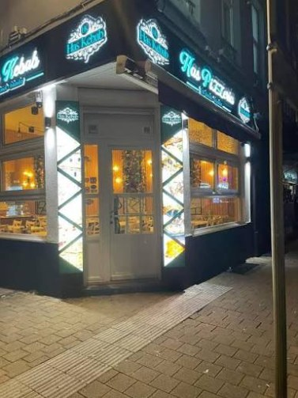

La pide de la maison
La Haecht 115
Bœuf haché épicé, sucuk grillé, kaşar fondant et un œuf cassé à la sortie du four. Elle porte le numéro de notre adresse. C'est celle qu'on vous conseille si vous hésitez.
15,50 €
Hoş geldinizBienvenue
Le four est chaud. Votre table vous attend.
Pides cuites au four, kebabs coupés à la commande et grillades halal, au 115 de la chaussée de Haecht. Ouvert six jours sur sept, de 11 h à 23 h.

« Le meilleur İskender que j'ai mangé à Bruxelles. Le beurre versé à table change tout. On reviendra en famille, les petits ont adoré la mini pide. »
« La pide kaşarlı est parfaite, croûte croustillante et fromage qui file. Service rapide même un samedi soir, et la terrasse est agréable quand il fait beau. »
« Portions généreuses pour le prix. Le dürüm Adana pique juste ce qu'il faut et la viande est bien grillée. Équipe souriante. »
« Très bon rapport qualité-prix. Un peu d'attente le vendredi soir, il y avait du monde, mais le künefe en dessert valait le coup. »
« Commandé à emporter pour six personnes. Tout était encore chaud en arrivant et bien emballé. Le lahmacun est fin comme il faut. »
La carte
Une carte courte, préparée ici chaque jour. Toutes nos viandes sont halal. Les plats portent leur nom turc, avec la prononciation en dessous pour commander sans hésiter.
Pâte étirée à la main, bords roulés, cuite à haute température jusqu'à ce que le dessous croustille. Comptez une dizaine de minutes.
La pide de la maison
Bœuf haché épicé, sucuk grillé, kaşar fondant et un œuf cassé à la sortie du four. Elle porte le numéro de notre adresse. C'est celle qu'on vous conseille si vous hésitez.
15,50 €
Bœuf haché, oignon, tomate, poivron vert et persil plat. La pide de tous les jours.
Kaşar fondu et un trait de beurre sur la croûte. Celle que les enfants réclament.
Végétarien
Sucuk de bœuf, kaşar et œuf coulant. Le petit-déjeuner turc, passé au four.
Petits dés d'agneau saisis, tomate, poivron et piment doux.
Épinards frais, beyaz peynir (fromage blanc saumuré) et oignon nouveau.
Végétarien
Le mélange de la maison avec bœuf haché, dés d'agneau, sucuk et kaşar. Pour les grandes faims, ou à partager.
Toutes les pides peuvent être coupées en parts, sur place ou à emporter.
Le döner tourne dès l'ouverture. Il est coupé au couteau au moment où vous commandez.
Döner de veau, salade, tomate et oignon au sumac, roulés dans un lavash chaud.
Döner de poulet mariné au yaourt et au paprika, crudités, sauce yaourt à l'ail.
Brochette de bœuf et d'agneau hachés au piment, grillée puis roulée avec persil, oignon et tomate grillée.
Piquant
Veau ou poulet dans un pain pide moelleux, crudités et sauce au choix. Le classique du midi.
Veau ou poulet, pilav au beurre, salade du berger, pain chaud et sauce.
Döner posé sur des cubes de pide, sauce tomate, yaourt épais et beurre noisette versé à table.
Spécialité de la maison
Sauces au choix : yaourt à l'ail, piquante, andalouse, samouraï. Frites en supplément, 3,00 €.
Servies avec pilav au beurre, salade du berger, piment et tomate grillés, et pain chaud.
Bœuf et agneau hachés au couteau avec du piment rouge, grillés sur une brochette plate.
Piquant
La même brochette, sans piment. Douce et fumée.
Cubes de poulet marinés une nuit au yaourt, au citron et au paprika.
Brochettes d'agneau, oignon rouge et tomate grillés.
Boulettes de bœuf à l'oignon, au cumin et au persil, grillées.
Purée d'aubergine fumée au yaourt et à l'ail, avec de l'agneau sauté au beurre par-dessus.
Adana, tavuk şiş, kuzu şiş, köfte et döner sur un grand plateau, avec deux pilav et une salade du berger.
À partager
Une galette très fine qui sort du four. On ajoute persil et citron, on la roule et on la mange avec les mains.
Bœuf haché, tomate, poivron, oignon et persil en couche fine. Servi avec citron et salade.
À la façon de Gaziantep, plus relevé, avec isot (piment fumé) et ail.
Piquant
Deux lahmacun au choix et un ayran maison. La formule du midi.
Pour commencer, ou pour composer un repas à plusieurs. Servis avec du pain pide chaud.
Soupe de lentilles corail, citron et menthe séchée.
Végétarien
Pois chiches, tahini, citron, huile d'olive et paprika.
Végétarien
Yaourt égoutté très épais, ail, menthe et aneth.
Végétarien
Tomate, poivron et oignon hachés au couteau, mélasse de grenade et piment.
VégétarienPiquant
Quatre feuilletés croustillants roulés au beyaz peynir et au persil.
Végétarien
Salade du berger avec tomate, concombre, oignon, persil, citron et huile d'olive.
Végétarien
Humus, haydari, ezme et sigara böreği, avec une corbeille de pain pide chaud.
Végétarien
Pour les moins de 12 ans, servi sur place ou à emporter.
Jusqu'à 12 ans
Des portions à leur taille, avec les mêmes produits que pour les grands.
Gardez une place pour le künefe.
Cheveux d'ange croustillants, fromage fondant, sirop léger et pistache. Préparé à la commande, comptez dix minutes.
Spécialité de la maison
Quatre pièces, pâte filo beurrée, pistaches d'Antep. À prendre avec un çay.
Riz au lait gratiné au four, servi froid. Cannelle sur demande.
Vanille, chocolat ou pistache.
Le thé est servi bien chaud dans un verre tulipe. Demandez-en un autre quand vous voulez.
Yaourt battu, eau fraîche et une pincée de sel. La boisson qui va avec le kebab.
Thé noir turc longuement infusé, servi en verre tulipe.
Café turc préparé au cezve, servi avec un verre d'eau et un loukoum.
Jus de carotte pourpre fermenté, doux ou piquant. Pour les connaisseurs et les curieux.
Citron pressé et menthe fraîche, peu sucré.
Cola, cola zéro, orange, citron, thé glacé.
Plate ou pétillante.
Toutes nos viandes sont halal. Prix en euros, TVA comprise.
Allergènes (gluten, lait, œuf, sésame, fruits à coque) : demandez la fiche à l'équipe.
La maison
C'est le nom de notre enseigne et la règle de notre cuisine. La pâte des pides est pétrie le matin, toute la viande est halal et les recettes turques sont faites comme il faut, sans raccourci.
Au 115 de la chaussée de Haecht, on reçoit les habitués du midi, les familles le week-end et ceux qui passent prendre un dürüm en rentrant. Le soir, l'enseigne reste allumée en bleu jusqu'à 23 h.
À emporter
Dites-nous ce qui vous fait envie et on vous donne l'heure de passage. Pas d'application, pas de frais. Les pides sont coupées et emballées pour rester croustillantes.
Livraison
Nous livrons via les applications de livraison. Cherchez « Has Pide Kebap » dans la vôtre, toute la carte y est.
Le conseil de la maison
Une pide se réchauffe deux ou trois minutes au four à 200 °C, posée directement sur la grille. Évitez le micro-ondes, la croûte ramollit.
Réservation
Un déjeuner entre collègues, un anniversaire en famille ou une pide en terrasse un soir d'été. Dites-nous quand, on prépare la table.
Par téléphone
02 203 83 00Demande envoyée
Votre demande est arrivée. Nous vous rappelons pour confirmer votre table.
Une question en attendant ? 02 203 83 00
Bon à savoir
Une autre question ? L'équipe répond au téléphone tous les jours sauf le jeudi.
Oui. Toute notre viande est halal : le döner, les brochettes, les köfte, le sucuk et la viande des pides.
Ce n'est pas obligatoire. Le vendredi soir et le week-end, réserver vous évite d'attendre. Pour plus de 10 personnes, appelez-nous.
Oui. Le menu Petit Has (9,50 €) comprend un plat, un accompagnement, une boisson et une glace.
Oui, ouverte dès que le temps le permet. Choisissez « en terrasse » en réservant et on vous la garde si la météo suit.
Oui. La pide kaşarlı, la pide aux épinards, la soupe de lentilles et tous les mezzes. Ils sont marqués d'une feuille sur la carte.
La pâte contient du gluten. Plusieurs plats contiennent du lait, de l'œuf, du sésame ou des fruits à coque. Signalez votre allergie en commandant, l'équipe vous montre la fiche allergènes.
C'est le jour de repos de toute l'équipe. On rouvre le vendredi à 11 h.
Horaires & accès
AÇIK Ouvert de 11 h à 23 h, fermé le jeudi
| Lundi | 11:00 – 23:00 |
|---|---|
| Mardi | 11:00 – 23:00 |
| Mercredi | 11:00 – 23:00 |
| Jeudi | Fermé |
| Vendredi | 11:00 – 23:00 |
| Samedi | 11:00 – 23:00 |
| Dimanche | 11:00 – 23:00 |
Haachtsesteenweg 115, 1030 Schaarbeek